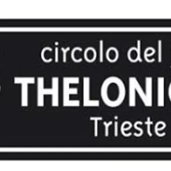

mar 10 nov · dalle 20:15
Circolo del Jazz Thelonious: Jochen Ruckert Quartet
Jochen Ruckert-batteria Alexandra Ridout-tromba Kevin Sun-sax Hamish Smith-contrabbasso Il batterista Jochen Rueckert presenta il suo nuovo quartetto proveniente da New York: una formazione composta da musicisti emergenti, più giovani di lui di circa vent'anni – una sfida che il…
 Indicazioni
Indicazioni
- Costi e prenotazioni
- Costo non indicato · Prenotazione non indicata
- Programma
- Programma da verificare. Apri la fonte ufficiale per orari e possibili aggiornamenti.
- In caso di maltempo
- Nessuna indicazione specifica pubblicata.
- Note
- Acquisito automaticamente dalla fonte.
L’EVENTO
Descrizione completa
Jochen Ruckert-batteria
Alexandra Ridout-tromba
Kevin Sun-sax
Hamish Smith-contrabbasso
Il batterista Jochen Rueckert presenta il suo nuovo quartetto proveniente da New York: una formazione composta da musicisti emergenti, più giovani di lui di circa vent'anni – una sfida che il bandleader ha scelto di affrontare per restare al passo con la nuova generazione e investire in essa. Facendo tesoro della vasta esperienza maturata collaborando con due delle più importanti formazioni jazz acustiche degli anni 2000 – il quartetto di Kurt Rosenwinkel e il trio di Sam Yahel, quest'ultimo ingiustamente sottovalutato – Rueckert ha ampiamente dimostrato di saper guidare ensemble di altissimo livello: il suo precedente quartetto, che annoverava musicisti del calibro di Mark Turner, Lage Lund e Mike Moreno, ha suonato in tutto il mondo per oltre 15 anni. Oltre ai propri progetti, Rueckert è molto apprezzato come sideman; ha fatto parte a lungo di formazioni come "Reed’s Ramble" di Seamus Blake e Chris Cheek, il trio di Marc Copland e i "Root 70" di Nils Wogram, collaborando inoltre di recente con Melissa Aldana e Fred Hersch. Jochen si è esibito sui palchi di tutto il mondo, incluso il "santo graal" del jazz, il Village Vanguard: il luogo che, in definitiva, gli sta più a cuore.
Ingressi: intero 15euro, studenti 10euro, soci gratuito. Info e prenotazioni: 3200480460 / WhatsApp / thelonious.trieste@gmail.com
IL PROGRAMMA
Programma e orari
Appuntamenti raccolti dalle fonti elencate. Dove manca un orario, non è ancora disponibile in questa scheda.
Programma pubblicato
- Dal 2026-11-10 al 2026-11-10
INFORMAZIONI UTILI
Prima di partire
- Controllare la fonte prima di partire.
ORGANIZZAZIONE